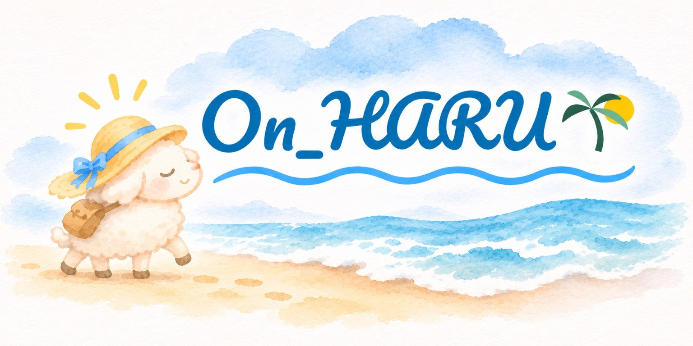
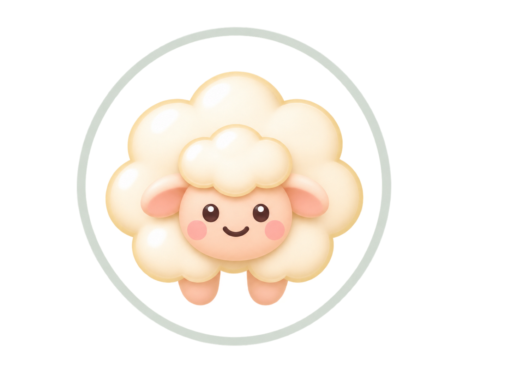

Saved automatically as you type · linked to the day wrap-up.
Not protected · export a backup · Last backup –
Schedule & tasks
Schedule for this day
Task list
How have you been so far?
–
How you feel now
Energy ↑Mood →
Morning class notes
Today’s tasks
🙏
Be still. Take your time.
Ready
10:00
Today P 0 · D 0 · F 0m
Last backup: never
Selected day’s records
Devotion & personal prayer
Class notes
Mood trends
EnergyMood
Mood and Energy scores are estimates from selected feeling words.
App settings
🙏
On_HARU · Quick start
On_HARU
한국어 / English
사용할 언어를 선택하세요. Choose your language.

Learn by doing · about 3–5 minutes
Welcome
Try writing a note, checking in, planning and finding your records. Practice uses temporary data and leaves your own records unchanged.

View record
Edit note
Changes apply when you save.
Daily emoji
Good day
Mixed feelings
Everyday life · breaks
Faith · gratitude
Schedule
Event note
Edit this date only
Only this date changes; recurring events on other dates stay the same.
New event
New task
What stayed with you
Auto-saved as you type.
Meal
All notes
My app name
Prayer requests
Prayer requests
Session history
Reflection settings
Weeks run Monday–Sunday. On Monday, reflect on the previous week. You can write a weekly reflection on any day.
About On_HARU
On_HARU helps you capture meaningful moments and return to them through reflection and prayer.
Your records stay in this browser on this device. Clearing browser data or using another device may remove or separate your records. Export a JSON backup from Review before moving devices.
Reset this app?
This deletes all notes, check-ins, sessions, prayer requests, tasks, and custom schedules in this browser. Settings and the schedule return to their defaults. Any running timer will stop.
This cannot be undone. Download a backup first if you want to restore your data later. Other devices are not affected.